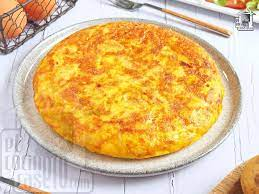

Spanish Omelette

Spanish omelette or Spanish tortilla is a traditional dish from Spain.
The first reference to the tortilla in Spanish is found in a Navarrese document, as an anonymous "mousehole memorial" addressed to the court of Navarre in 1817. It explains the sparse conditions of Navarre's farmers in contrast with those in Pamplona (the capital) and la Ribera (in southern Navarre). After listing the sparse food eaten by highlanders, the next quote follows: "…two to three eggs in tortilla for 5 or 6 [people] as our women know how to make it big and thick with fewer eggs, mixing potatoes, breadcrumbs or whatever."
Ingredients
- Eggs
- Potatoes
- Onions
- Olive Oil
- Salt, to taste
- Cracked black pepper, to taste
Steps
- Heat the oil in a nonstick medium-sized (30cm/12-inch) pan. Fry potatoes until crispy, golden and tender. Add the onion and fry until transparent. Drain oil (use a metal colander if you have one), until all of the oil is drained.
- Return potatoes and onions to the pan, arranging them in a single layer. Reduce heat down to low.
- Beat eggs with salt and pepper to taste. Pour egg mixture into the pan, moving the potatoes and onions around the eggs using a plastic spatula. Every so often, move the eggs around the potatoes while it's cooking to ensure the eggs cook on the bottom, so there's not much eggs left on the top.
- Place a big, round plate on top of the pan, and with your hand holding the plate, flip the tortilla onto the plate. Then, slide the tortilla back into the pan carefully, moving the onion and potatoes carefully back into the pan along with the tortilla.
- Keep cooking, gently shaking the pan occasionally, until completely cooked through.
- To remove the tortilla from the pan, place a clean plate on top of the tortilla and flip again onto the plate. Garnish with parsley (optional).
- Serve with a salad, or use as an entree or appetiser. Great for snacks. Traditionally served as tapas in little squares.